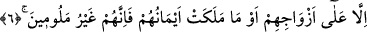
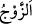
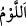
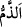

6. Ancak eşleri ve ellerinin sahip olduğu (câriyeleri) hariç. (Bunlarla ilişkilerden
dolayı) kınanmış değillerdir.
“Ancak eşleri” zevceleri “ve ellerinin sahip olduğu (câriyeleri) hariç.”
“__WORD__ /zevc” kelimesi, hem erkek hem de kadın için “eş” anlamında kullanılır.
“Ellerinin sâhip olduğu” ifâdesi her ne kadar erkekleri de içine alsa da icmâ ile
kadınlara mahsustur.
“Onlar ki, boş ve yararsız şeylerden yüz çevirirler.” âyetindeki (3. âyet) genel
ifâdeden sonra “Ve onlar ki, iffetlerini korurlar…” âyetlerinin (5 ve 6. âyetler) ayrı
olarak getirilmesi, cinsel ilişkinin nefis için eğlencelerin/boş ve yararsız şeylerin en
çok arzu duyulan ve en önemli olanlarından olması sebebiyledir.
Hayız, nifas, oruçlu ve ihramlı olmamak şartıyla eşleri ve câriyeleri ile ilişkilerinden
dolayı “kınanmış değillerdir.”
“__WORD__/levm (kınama)”, içinde kötüleme bulunan bir şeye nisbet ederek insanı
azarlamaya/paylamaya denir. et-Tehzîb’de: “__WORD__, kötülemek demektir.” der.
el-Es’iletü’l-mukheme’de şöyle der: “__WORD__ ve “__WORD__ arasında ne fark vardır? Cevap: “__WORD__ sıfatlara mahsustur. Mesela “İnkâr, zemmedilmiş/yerilmiştir.” denir. “__WORD__ ise
şahıslara mahsustur. Meselâ “Falanca levmedilmiş/kınanmıştır.” denir.
et-Te’vîlâtü’n-Necmiyye’de der ki: “Yâni onlar şehvetlerden lezzet almaktan
korunurlar. Eşleri ve câriyeleri Allah’tan ve O’nu talebden meşgul ederek kendilerine
düşman olmaz. İşte o zaman onlardan sakınmak gerekir. Nitekim Allah Teâlâ: “Ey îman
edenler! Eşlerinizden ve çocuklarınızdan size düşman olanlar da vardır. Onlardan
sakının.” (et-Teğâbün, 64/14) buyurmuştur.
Eşleri onlara değil onlar eşlerine hâkim oldukları için âyette “__WORD__ lafzı ile
zikredilmiştir. Onlar eşlerinin mâliki olmuşlar, memlûkü/kölesi olmamışlardır. “Onlar
kınanmış değillerdir.” Çünkü nikahları nesil elde etmek, sünnete riâyet etmek için ve
vaktinde yapılmıştır.
7. Şu halde, kim bunun ötesine gitmek isterse, işte bunlar, haddi aşan kimselerdir.
“Şu halde, kim” cinsî münâsebette bulunmak için “bunun ötesine gitmek” hür
kadınlardan dört ve câriyelerden dilediği kadar nikahlamak şeklinde genişletilen sınırı
aşmayı, kendi kadınlarından ve cariyelerinden başkasını “isterse, işte bunlar, haddi
aşan kimselerdir.” düşmanlıkta kâmil ve bu konuda son noktada olan kimselerdir. Ya da